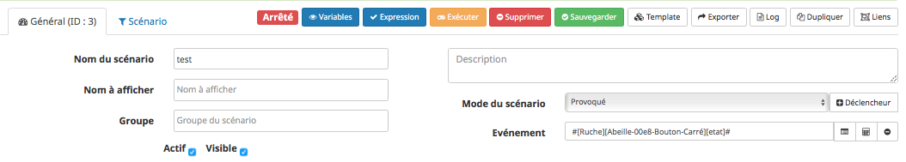
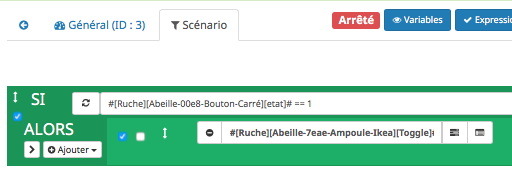

Xiaomi¶
Tous¶
Tous les périphériques classiques
Nouvelle inclusion¶
Mettre la Zigate en mode inclusion (Bouton Inclusion), la Led bleue de la Zigate doit clignoter…
Appui long de 7s sur le bouton du flanc de l’équipement, l’équipement doit se connecter et un objet doit apparaître dans Jeedom.
Déjà inclue¶
Zigate en fonctionnement normale
Appui court sur le bouton du flanc de l’équipement et l’objet Abeille doit être créé.
Bouton Rond¶
Bouton Rond (lumi.sensor_switch)
Ce bouton envoie un message lors de l’appui mais aussi lors du relâchement. L’état dans Abeille/Jeedom reflète l’état du bouton.
Bouton Carre¶
Bouton Carre (lumi.sensor_switch.aq2)
Contrairement au bouton rond ci dessus, le bouton carré n’envoie pas d’information sur l’appui. Il envoie l’information que sur la relache.
Afin d’avoir le visuel sur le dashboard, l’état passe à 1 sur la réception du message et Jeedom attend 1 minute avant de le remettre à 0.
Informations¶
Informations complémentaires
Du fait de ce fonctionnement, nous ne pouvons avoir une approche changement d’état. Il faut avoir une approche événement. De ce fait la gestion des scénarii est un peu différente du bouton rond.
Par défaut le bouton est configuré pour déclencher les scénarii à chaque appui (même si l’état était déjà à 1). Mais Jeedom va aussi provoquer un événement au bout d’une minute en passant la valeur à 0.
Lors de l’exécution du scénario, si vous testé l’état du bouton est qu’il est à un vous avez reçu un événement appui bouton, si l’état est 0, vous avez reçu un événement retour à zéro après une minute.
Par exemple pour commander une ampoule Ikea:
 Multi¶
Pour l’information multi, celle ci remonte quand on fait plus d’un appui sur le bouton. Multi prend alors la valeur remontée. Le bouton n’envoie pas d’autre information et donc la valeur reste indéfiniment. Par défaut l’objet créé demande à Jeedom de faire un retour d’état à 0 après une minute. Cela peut être enlevé dans les paramètres de la commande.
Le fonctionnement de base va provoquer 2 événements, un lors de l’appui multiple, puis un second après 1 minute (généré par Jeedom pour le retour d’état). Si vous enlevez de la commande le retour d’état alors vous n’aurez que l’événement appui multiple. Par défaut, en gros, le scénario se déclenche et si vous testez la valeur multi > 1, c’est un événement appui multiple et si valeur à 0 alors événement Jeedom de retour d’état.
Inondation¶
Capteur Inondation (lumi.sensor_wleak.aq1)
Appui court (<1s) sur le dessus
Remonte son nom et attribut ff01 (longueur 34)
Porte V1¶
Capteur de Porte Ovale (lumi.sensor_magnet)
Appui court (<1s) avec un trombone
Remonte un champ ff02 avec 6 éléments Puis son nom lumi.sensor_magnet
Porte V2¶
Capteur Porte Rectangle (lumi.sensor_magnet.aq2)
Appui court (<1s) sur bouton latéral
Remonte son nom et ff01 (len 29)
Appui Long (7s) sur bouton latéral
Inclusion Remonte son nom et Application Version Remonte ff01 (len 29)
Appui court (<1s) avec trombone
Appui long (7s) avec trombone
Inclusion Remonte son nom Remonte Appli Version Remonte ff02 avec 6 éléments
Double flash bleu sans action de notre part
Visiblement quand le capteur fait un rejoin après avoir perdu le réseau par exemple, il fait un double flash bleu.
Présence V2¶
Capteur de Présence V2
Appui court (<1s) sur bouton latéral
Remonte son nom et FF01 de temps en temps.
Appui long (7s) sur bouton latéral
Inclusion Remonte son nom et SW version Remonte FF01 (len 33)
Comportement
Il remonte une info a chaque détection de présence et remonte en même temps la luminosité. Sinon la luminosité ne remonte pas d’elle même. Ce n’est pas un capteur de luminosité qui remonte l’information périodiquement.
Température V1¶
Capteur Température Rond (lumi.sensor_ht)
Appui court (<1s) sur bouton latéral
Remonte son nom
Appui long (7s) sur bouton latéral
Exclusion Inclusion Remonte son nom et appli version Remonte ff01 (len 31)
Température V2¶
Capteur Température Carré (lumi.weather)
Appui court (<1s) sur bouton latéral
Si sur le réseau: Remonte son nom Si hors réseau et Zigate pas en Inclusion: Un flash bleu puis un flash bleu unique Si hors réseau et Zigate en Inclusion: Un flash bleu, pause 2s, 3 flash bleu
Appui long (7s) sur bouton latéral
Exclusion Inclusion Remonte son nom et appli version Remonte ff01 (len 37)
Comportement
Si détection de petite variation de température ou humidité, rapport une fois par heure
Si variation de plus de 0,5°C ou de plus de 6% d’humidité, rapport immédiat
Précision (Source Appli IOS MI FAQ Xiaomi)
Température +-0,3°C
Humidité +-3%
Cube Aqara¶

Wall Switch 1¶
Wall Switch Double Battery (lumi.sensor_86sw2)
Appui long (7s) sur bouton de gauche
Inclusion Remonte son nom et appli version Remonte ff01 (len 37)
getName
Il répond au getName sur EP 01 si on fait un appuie long sur l’interrupteur de droite (7s) et pendant cette période on fait un getName depuis la ruche.
Appui très Long (>10s) sur bouton de gauche
Exclusion
Wall Switch 2¶
Wall Switch Double 220V Sans Neutre (lumi.ctrl_neutral2)
Appui long (7s) sur bouton de gauche
Inclusion Remonte son nom et appli version Remonte d’autres informations
getName
Il répond au getName sur EP 01 s.
Appui Tres Long (>8s) sur bouton de gauche
Exclusion
« retour d’expérience » sur l’utilisation des Wall Switch Xiaomi¶
J’ai remplacé un double inter par un Wall Switch Double 220V Sans Neutre (lumi.ctrl_neutral2) J’ai ajouté un Wall Switch Double Battery (lumi.remote.b286acn01) pour donc simuler un double va-et-viens avec l’autre Wall switch.
Inclusion nickel pour les 2. Comme d’habitude, j’ai du attendre 1 bonne journée pour que le réseau intègre bien les 2 Device (sans cela les commandes du neutral2 ne fonctionnaient pas toutes)
1) problèmes notés sur le Wall Switch Double 220V Sans Neutre (lumi.ctrl_neutral2) : Les commandes depuis jeedom « On1 », « Off1 », « On2 », « Off2 » sont très lentes A l’inverse les commandes « Toggle1 » et « 2 » sont assez réactives évidement la commande par appui sur les poussoirs du bouton est très réactive quant à elle.
2) problèmes notés sur le Wall Switch Double sur Battery (lumi.remote.b286acn01) : lors d’un appui sur n’importe quel switch, un événement est bien déclenché par l’info « etat1 » « 2 », ou « 3 ». Donc un message très vite chopé et on peut déclencher un scénario. MAIS (car il y a un mais) si on test la valeur d’un des informations « état.. » et bien elle ne change pas
Donc conclusion, comment utiliser tout ce matos ? et bien c’est simple :
Pour le Wall Switch Double sur Battery, on déclenche les scénarios sur changement des info « état.. ». mais on se fout des valeurs de ces info, on ne les teste pas, c’est du temps perdu. au lieu de cela faire directement l’action « Toggle » sur le Wall Switch Double 220V.
Ca marche, et c’est assez réactif (la pire latence notée était juste au dessus de la seconde)
Note
Si je me souviens bien ces switch se comportent comme des équipements terminaux sur pile (ils s’endorment), pas comme des routeurs (ampoules). La difference est que les ampoules sont en ecoute tout le temps et peuvent reagir immédiatement sur reception d’un message. Mais pour les interrupteurs le processus est different. La zigate envoie la demande qui est recue par les routeurs, ceux ci conserve la demande pendant 7s, l’interrupteur se reveille toutes les 5s (je crois me souvenir) et demande les commandes en attente pour lui. Le routeur qui sert l’interruptuer lui envoie la commande. Ceci explique ton delai observé. Le delai sera entre 0s et 5s en fonction du moment de reveil par rapport a l envoie de la demande. C est la meme chose pour On,Off et Toggle. On ne peut rien y faire c’est lié au firmware de l inter. Si tu veux cette meme fonction en instantané il faut que tu passes par un module relai xiaomi par exemple.
Note
Voir le chapitre information du bouton carré ci dessus.
Vibration¶
Capteur Vibration
Appui long (7s) sur bouton de gauche
Inclusion Remonte son nom et appli version Remonte d’autres informations
Attribute 0055
Il semblerai qu’une valeur:
1 indique une détection de vibration
2 indique un rotation
3 indique une chute
Attribute 0503
Pourrait être la rotation après l’envoi de l’attribut 0055 à la valeur 2
Attribute 0508
Inconnu, est envoyé après attribut 0055.
» Si ça peut servir a quelqu’un J’ai “presque” compris le fonctionnement de l’angle du capteur de vibration Xiaomi.
Donc, sensibilité réglée en “High”, on récupère :
Une Info “Evenement” qui va de 1 à 3 3 = choc violent 2 = je touche / bouge le capteur / fait tourner le capteur 1 = … ? retour a 1 après un 3 mais pas toujours, en résumé je n’ai pas trouvé de comportement répétitif et clair qui explique comment j’ai eu 1
Une info “Angle” Je ne comprenais rien au valeur remontées mais j’ai enfin compris. Il ne s’agit PAS d’une mesure d’angle absolue. C’est en fait la variation d’angle effectuée depuis la dernière remontée de valeur. Mais attention, c’est un valeur non signée, donc impossible de déterminer si il a continué de tourner ou bien si il est revenu en arrière. Autre chose importante, le capteur n’envoi une nouvelle info d’angle QUE lorsqu’il s’est arrêté de tourner. Il n’envoi rien durant le mouvement. Donc en résumé, si vous lui faites faire doucement 3 tours sur lui-même et revenez à une position proche de quelques degrés … impossible de le savoir et vous ne recevrez dans l’info que ces quelques degrés de delta. Dernière chose, la mesure se fait en rotation autour de 2 axes seulement. La rotation autour de l’axe vertical ne renvoi rien quel que soit la position du capteur.
Donc impossible avoir un angle d’ouverture de porte par exemple (rotation autour de la verticale).
Utilisation typique : un truc qui bascule puis s’arrête se stabilise… et qui revient a sa position ensuite. Il y a alors un envoi d’info a chaque position stable. ex : porte de garage, lucarne basculante, lames de pergola bioclimatique, etc..
Petit complément sur l’utilisation du capteur de vibration Xiaomi avec Abeille.
J’ai réussi sa mise en oeuvre comme détecteur de vent sur un store banne : Installé en bout de bras, juste protégé de la pluie au cas ou.. réglé en sensibilité « high »
Ca marche !! :D
Vent fort ou rafale, le capteur envoi Evenement « 1 » ou « 3 » ou bien « 1 puis 3 ».. peu importe donc je commande le « Repli » du store si « 1 » ou « 3 » (j’ai simulé le vent en secouant ou en tapant sur l’extrémité du store)
Et puis un erratum. J’avais écrit « Il n’envoi rien durant le mouvement. ».. c’est FAUX. Sur un mouvement lent et constant, il envoi régulièrement un Evenement « 2 » Vu la position en bout de bras que je lui ai donné, le capteur détecte un changement d’angle et envoi trois message « 2 » avec un delta d’angle de 5 ou 6° durant le mouvement.
Le risque aurait été qu’il envoi « 1 » ou « 3 » durant l’extension du store, entraînant un repli immédiat mais non, tout se passe bien, il envoi seulement des « 2 ».
«
Fumée¶
Capteur de fumée
3 appuis sur le bouton de façade
Inclusion ou Exclusion si la Zigate n’est pas en mode inclusion
Sensibilité du capteur
Il est possible de définir le seuil de détection du capteur: 3 niveaux (En développement).
Test du capteur
Avec le bouton tester, vous envoyez un message au capteur qui doit réagir avec un bip sonore (3 messages envoyés par Abeille, il doit y avoir entre 1 et 3 bips).
Réveil
Le capteur se réveille toutes les 15s pour savoir si la Zigate à des infos pour lui.
Gaz¶
Capteur Gaz
Ce capteur est un router.
Paramètres
Vous pouvez choisir le niveau de sensibilité: Low - Moyen - High
Tester la bonne connexion au réseau
Avec le bouton tester, vous envoyez un message au capteur qui doit réagir avec un bip sonore (3 messages envoyés par Abeille, il doit y avoir 3 bips à 5s d’intervalles).